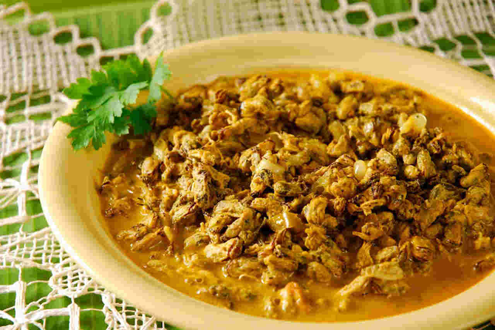

Comidas tipicas do Alagoas


Por ser uma região litorânea, os pratos com
peixes e frutos do mar são os mais comuns,
além de sobremesas com coco e frutas da região.
Tapioca, cuscuz, arroz doce, batata doce, inhame,
mandioca, carne de sol, pé-de-moleque, canjica
e pamonha completam o cardápio.